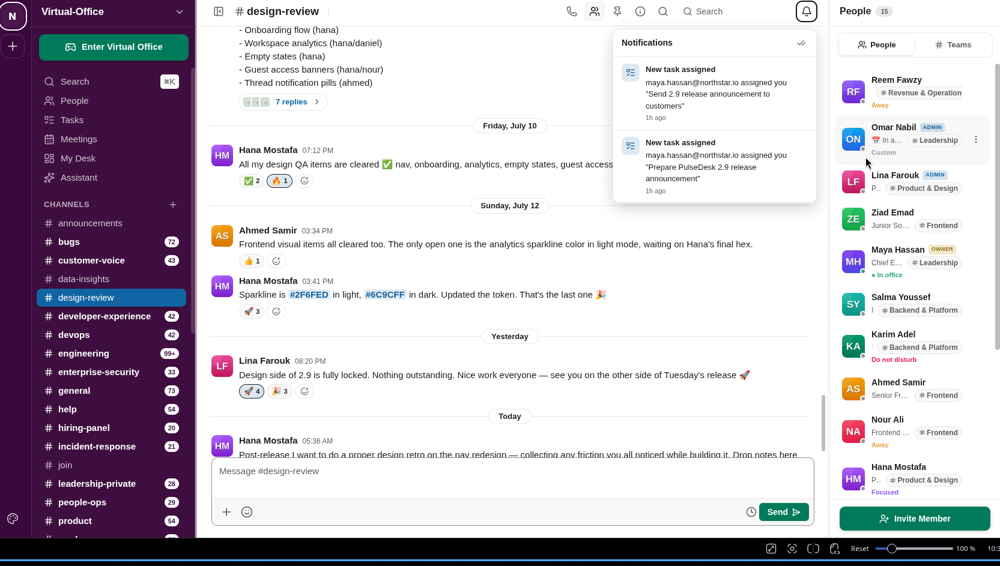
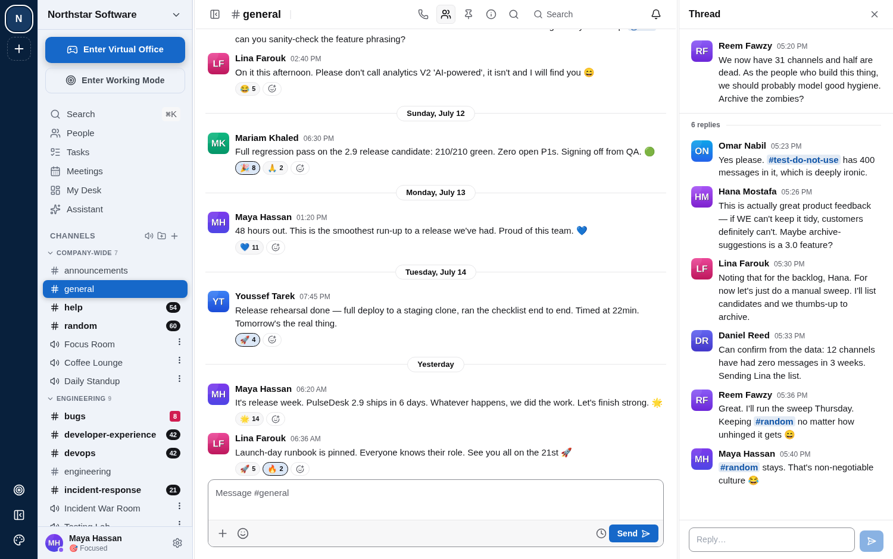
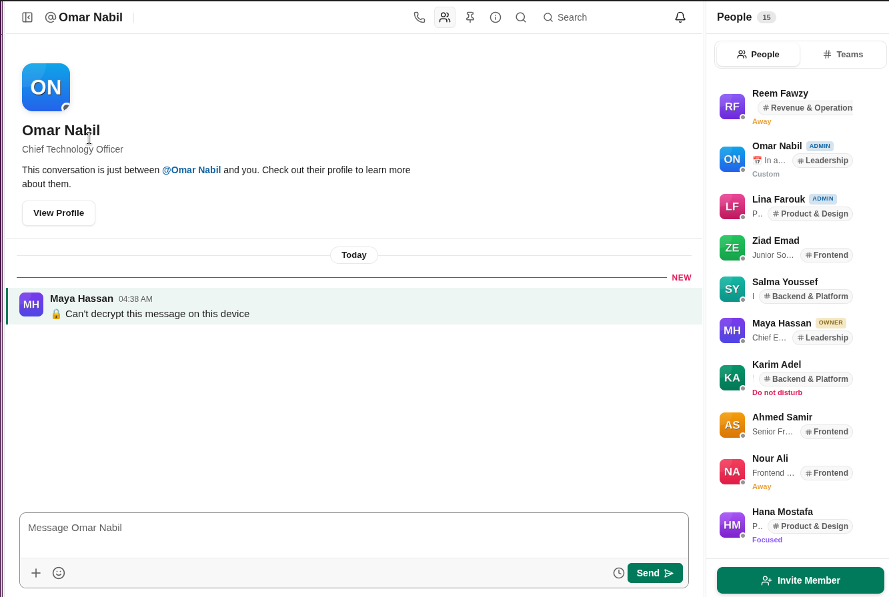

Features / Chat, threads & direct messages
Chat, threads & direct messages
WebChannels, threads and DMs, built around real conversations rather than a demo with three test messages in it — the seeded workspace carries three months of history across 25 channels.
- Threads keep a busy channel readable — replies branch off without burying the main feed.
- Reactions, mentions and @-notify work the way you'd expect from any team chat.
- Search finds a message by content, sender, or channel.

Open any message into a thread without losing your place in the channel.

Direct messages get their own space — and, unlike channels, they're end-to-end encrypted (see Security).
